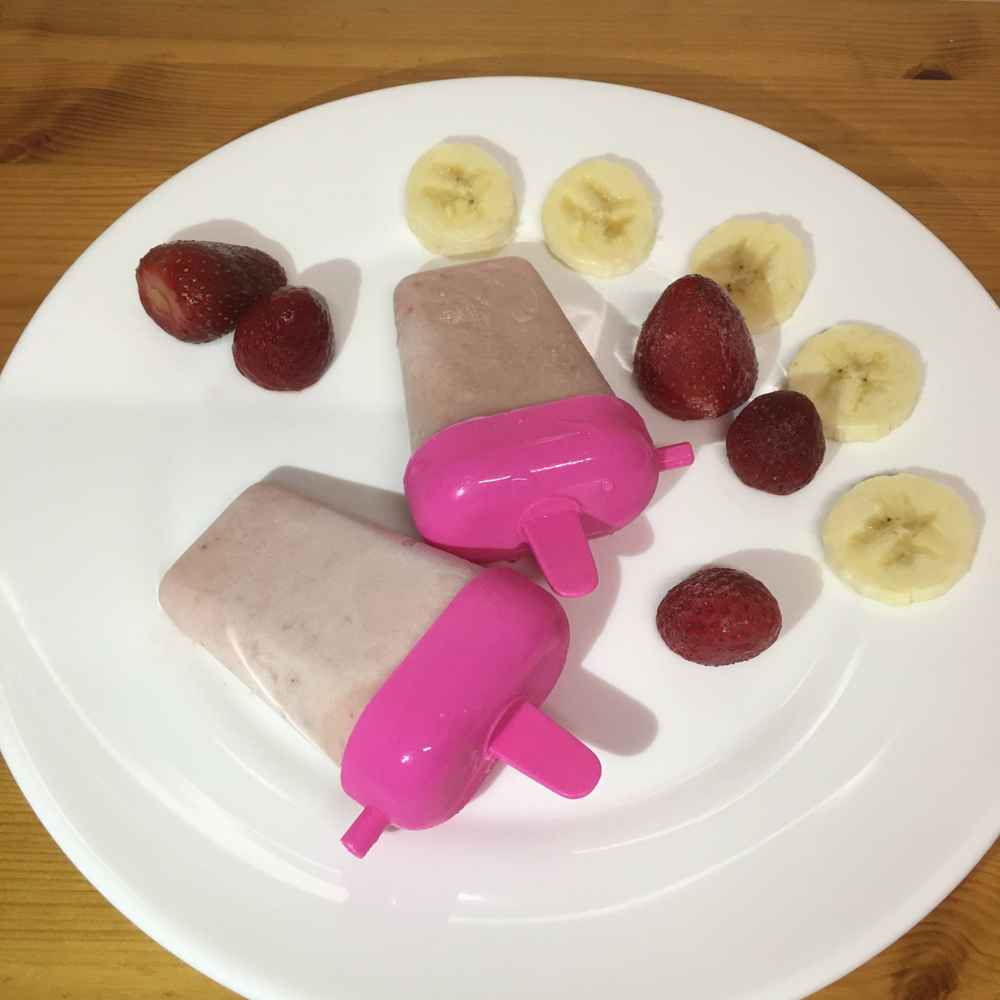

Picolé de morango e banana

Ingredientes
- 1 xícara (chá) de leite (240 ml)
- 10 morangos (155 g)
- 2 bananas (200 g)
- 1 colher (sopa) de aveia em flocos (opcional)
Modo de preparo
- Bater todos os ingredientes no liquidificador.
- Dispor em forminhas de picolé e levar para congelar.
- Para desenformar, deixar cair um pouco de água corrente ou esperar alguns minutos fora do congelador.
Observação
Rende aproximadamente 13 picolés.